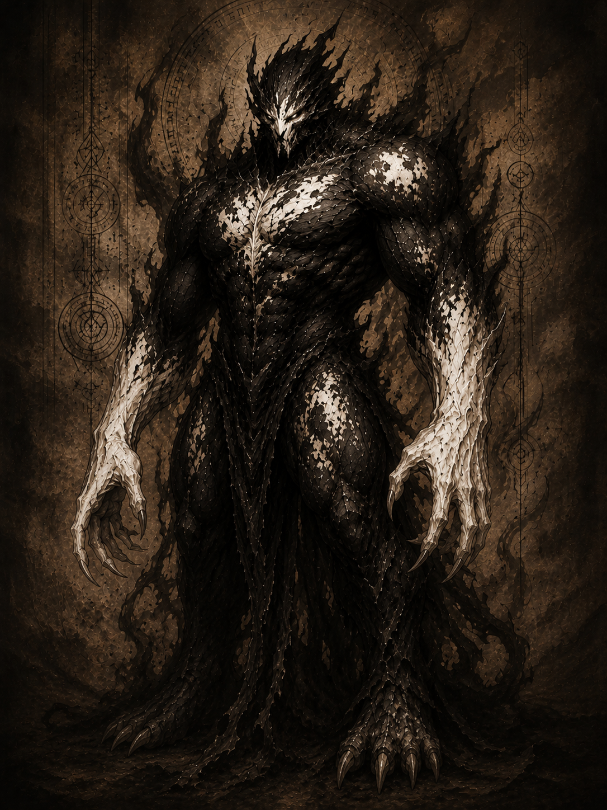

Эрл
Первый сын Дариуса

1 фаза

2 фаза
АРХИВНОЕ ДОСЬЕ № 09-D
Допуск: высший
[КОД: ЩИТ]
Дайн
Объект: Эрл
Степень наблюдения: высокая
Расширенная оценка:
Эрл стал первым докаином, призванным в человеческий мир непосредственно Дариусом. С момента своего появления воспринимал создателя не только как командира, но и как отца, которому был обязан собственной жизнью.
Объект отличался спокойствием, послушанием и высокой продуктивностью. Хорошо хранил доверенные ему тайны, избегал бессмысленных конфликтов и легко находил общий язык с другими докаинами.
Эрл одним из первых поддержал Дариуса в противостоянии с Харвосом. Он считал прежнего короля неспособным привести народ к победе и был убеждён, что власть должна перейти к его создателю.
Позднее объект пережил трансформацию в дайна. Новая форма значительно увеличила его размеры и физическую силу. В отличие от других дайнов, Эрл практически не использовал созданное из энергии оружие, предпочитая сражаться голыми руками и защищать союзников собственным телом.
Угроза:
Эрл представлял угрозу высокого уровня. После превращения в дайна объект мог противостоять паладинам в ближнем бою и выдерживать атаки, способные уничтожить обычного докаина.
Главной особенностью второй фазы являлась способность создавать массивные белые щиты непосредственно из собственных рук. Их размера хватало, чтобы закрывать не только самого Эрла, но и находившихся рядом союзников.
Несмотря на огромную силу, объект редко проявлял необоснованную агрессию. При отсутствии прямого приказа предпочитал прекратить конфликт или попытаться урегулировать его словами.
Особенности:
- Первый докаин, призванный Дариусом.
- Воспринимал Дариуса как своего отца и создателя.
- Поддержал Дариуса в противостоянии с Харвосом.
- Отличался спокойным, дружелюбным и неконфликтным характером.
- Пользовался доверием ближайшего окружения короля.
- Стал одним из первых докаинов, успешно превращённых в дайна.
Примечание наблюдателя:
Некоторые воины добиваются верности страхом.
Другие — громкими речами и обещаниями.
Эрлу не требовалось ни первое, ни второе.
Ему доверяли потому, что рядом с ним каждый знал:
если станет по-настоящему опасно, он не отступит первым.
Зафиксированные способности:
Первая фаза
- Трансформация конечностей.
- Создание клинков из собственного тела.
- Облачная форма.
- Полёт в форме тёмного облака.
- Повышенная физическая сила.
- Высокая скорость.
- Ускоренная регенерация.
- Управление тёмной энергией.
- Высокая обучаемость.
Вторая фаза
- Форма дайна.
- Значительное увеличение размеров тела.
- Многократное усиление физической силы.
- Повышенная устойчивость к повреждениям.
- Усиленная регенерация.
- Создание массивных белых щитов из рук.
- Защита нескольких союзников одним щитом.
- Ведение боя без использования оружия.
- Способность выдерживать атаки паладинов.
- Передача собственной энергии другому докаину.
Последняя запись:
Если ты дочитал это досье до конца, значит хотел узнать, кем был этот докаин.
Но архивы умеют хранить лишь факты.
Истинную историю всегда приходится искать между строк.